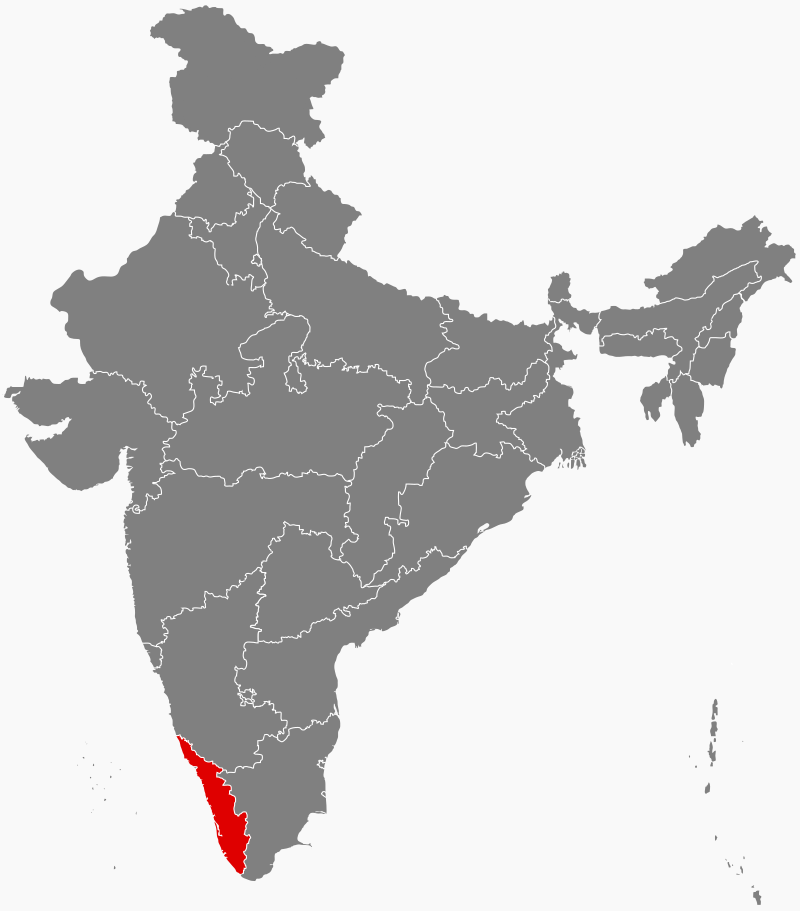
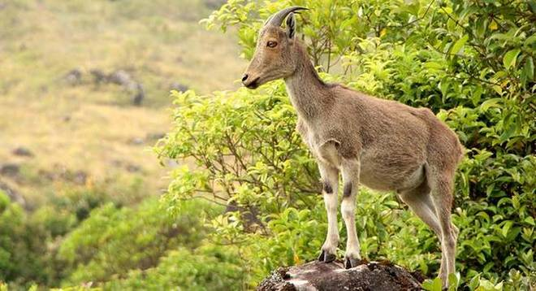

Kerala (/ˈkɛrələ/) is a South Indian state on the southwestern, Malabar Coast. It was formed on 1 November 1956, following passage of the States Reorganisation Act, by combining Malayalam-speaking regions. Spread over 38,863 km2 (15,005 sq mi), Kerala is the twenty second largest Indian state by area. It is bordered by Karnataka to the north and northeast, Tamil Nadu to the east and south, and the Lakshadweep Sea and Arabian Sea to the west. With 33,387,677 inhabitants as per the 2011 Census, Kerala is the thirteenth-largest Indian state by population. It is divided into 14 districts with the capital being Thiruvananthapuram. Malayalam is the most widely spoken language and is also the official language of the state.[9]
The Chera Dynasty was the first prominent kingdom based in Kerala. The Ay kingdom in the deep south and the Ezhimala kingdom in the north formed the other kingdoms in the early years of the Common Era (CE or AD). The region had been a prominent spice exporter since 3000 BCE. The region's prominence in trade was noted in the works of Pliny as well as the Periplus around 100 CE. In the 15th century, the spice trade attracted Portuguese traders to Kerala, and paved the way for European colonisation of India. At the time of Indian independence movement in the early 20th century, there were two major princely states in Kerala-Travancore State and the Kingdom of Cochin. They united to form the state of Thiru-Kochi in 1949. The Malabar region, in the northern part of Kerala had been a part of the Madras province of British India, which later became a part of the Madras State post-independence. After the States Reorganisation Act, 1956, the modern-day state of Kerala was formed by merging the Malabar district of Madras State (excluding Gudalur taluk of Nilgiris district, Topslip, the Attappadi Forest east of Anakatti), the state of Thiru-Kochi (excluding four southern taluks of Kanyakumari district, Shenkottai and Tenkasi taluks), and the taluk of Kasaragod (now Kasaragod District) in South Canara (Tulunad) which was a part of Madras State.
The economy of Kerala is the 12th-largest state economy in India with ₹7.73 lakh crore (US$110 billion) in gross domestic product and a per capita GDP of ₹163,000 (US$2,300).[3][4] Kerala has the lowest positive population growth rate in India, 3.44%; the highest Human Development Index (HDI), 0.712 in 2015; the highest literacy rate, 93.91% in the 2011 census; the highest life expectancy, 77 years; and the highest sex ratio, 1,084 women per 1,000 men. The state has witnessed significant emigration, especially to Arab states of the Persian Gulf during the Gulf Boom of the 1970s and early 1980s, and its economy depends significantly on remittances from a large Malayali expatriate community. Hinduism is practised by more than half of the population, followed by Islam and Christianity. The culture is a synthesis of Aryan, Dravidian, Arab, and European cultures,[10] developed over millennia, under influences from other parts of India and abroad.
The production of pepper and natural rubber contributes significantly to the total national output. In the agricultural sector, coconut, tea, coffee, cashew and spices are important. The state's coastline extends for 595 kilometres (370 mi), and around 1.1 million people in the state are dependent on the fishery industry which contributes 3% to the state's income. The state has the highest media exposure in India with newspapers publishing in nine languages, mainly English and Malayalam. Kerala is one of the prominent tourist destinations of India, with backwaters, hill stations, beaches, Ayurvedic tourism and tropical greenery as its major attractions.

Flora and Fauna
Most of the biodiversity is concentrated and protected in the Western Ghats. Three quarters of the land area of Kerala was under thick forest up to 18th century.[146] As of 2004, over 25%w of India's 15,000 plant species are in Kerala. Out of the 4,000 flowering plant species; 1,272 of which are endemic to Kerala, 900 are medicinal, and 159 are threatened.[147]:11 Its 9,400 km2 of forests include tropical wet evergreen and semi-evergreen forests (lower and middle elevations—3,470 km2), tropical moist and dry deciduous forests (mid-elevations—4,100 km2 and 100 km2, respectively), and montane subtropical and temperate (shola) forests (highest elevations—100 km2). Altogether, 24% of Kerala is forested.[147]:12 Three of the world's Ramsar Convention listed wetlands—Lake Sasthamkotta, Ashtamudi Lake and the Vembanad-Kol wetlands—are in Kerala, as well as 1455.4 km2 of the vast Nilgiri Biosphere Reserve. Subjected to extensive clearing for cultivation in the 20th century,[148]:6–7 much of the remaining forest cover is now protected from clearfelling.[149] Eastern Kerala's windward mountains shelter tropical moist forests and tropical dry forests, which are common in the Western Ghats.[150][151] The world's oldest teak plantation 'Conolly's Plot' is in Nilambur.[152]
Kerala's fauna are notable for their diversity and high rates of endemism: it includes 118 species of mammals (1 endemic), 500 species of birds, 189 species of freshwater fish, 173 species of reptiles (10 of them endemic), and 151 species of amphibians (36 endemic).[153] These are threatened by extensive habitat destruction, including soil erosion, landslides, salinisation, and resource extraction. In the forests, sonokeling, Dalbergia latifolia, anjili, mullumurikku, Erythrina, and Cassia number among the more than 1,000 species of trees in Kerala. Other plants include bamboo, wild black pepper, wild cardamom, the calamus rattan palm, and aromatic vetiver grass, Vetiveria zizanioides.[147]:12 Indian elephant, Bengal tiger, Indian leopard, Nilgiri tahr, common palm civet, and grizzled giant squirrels are also found in the forests.[147]:12, 174–175 Reptiles include the king cobra, viper, python, and mugger crocodile. Kerala's birds include the Malabar trogon, the great hornbill, Kerala laughingthrush, darter and southern hill myna. In the lakes, wetlands, and waterways, fish such as kadu; stinging catfish and choottachi; orange chromide—Etroplus maculatus are found.[147]:163–165

Culture
The culture of Kerala is composite and cosmopolitan in nature and it is an integral part of Indian culture.[17] It is synthesis of Aryan and Dravidian cultures,[380] defined by its antiquity and the organic continuity sustained by the Malayali people.[381] It has been elaborated through centuries of contact with neighbouring and overseas cultures.[382] However, the geographical insularity of Kerala from the rest of the country has resulted in the development of a distinctive lifestyle, art, architecture, language, literature and social institutions.[17] Over 10,000 festivals are celebrated in the state every year.[383] The Malayalam calendar, a solar calendar started from 825 CE in Kerala,[384] finds common usage in planning agricultural and religious activities.[385]